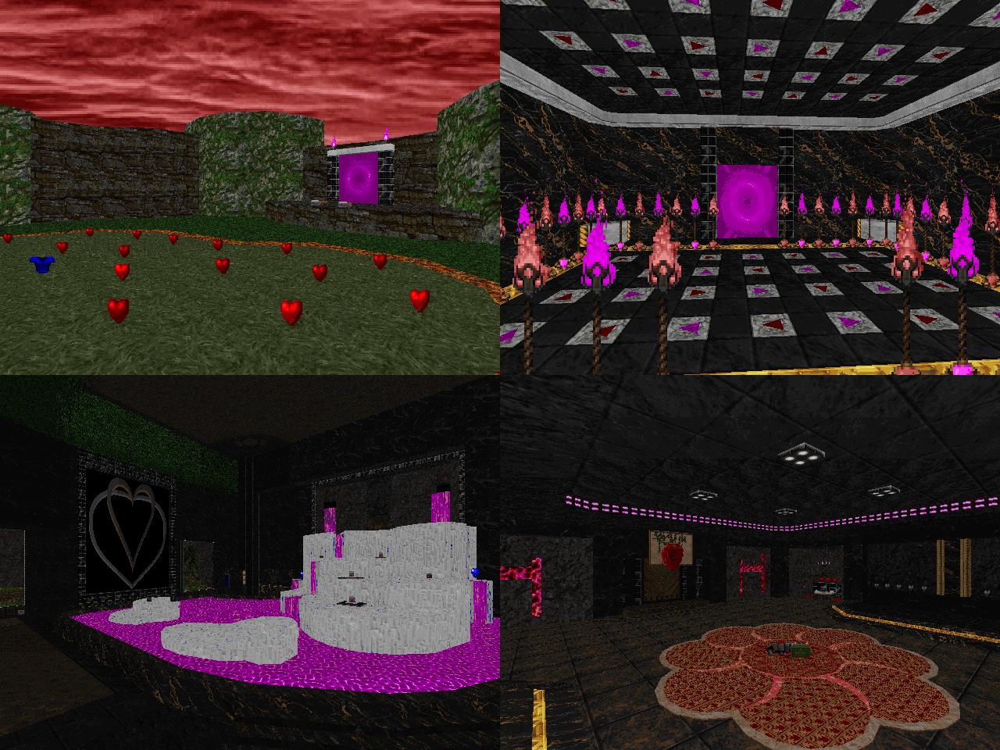

DOWNLOAD LINKS


| Year | 2024 |
| IWAD | Doom II |
| Source port | MBF21-compatible |
| Game mode(s) | Single-player, coop, deathmatch |
| Map(s) contributed | MAP14 (with DCraven_0ne) |
Doomworld Dating Simulator was a Valentine's-themed community project hosted by NiGHTS108 over the
course of February 2024. In the spirit of the day it was themed after, participating mappers had to pair up with
each other and collaborate on a map. The end result is an 18-map megawad with efforts from about 30 mappers.
For MAP14, "Bang Gangs Poetry Lounge", I teamed up with an old acquaintance, DCraven_0ne. The map is mostly
his handiwork - mapping-wise, I only did the outdoor section and the exit room. Either way, the map opens with
an outdoor area and has you go into a building to retrieve a key with which the exit may be accessed. But before
you can leave, you have to clear a movement puzzle or suffer fatal consequences. Overall, I'm quite proud of what
the two of us managed to put together, especially with this map having been my first proper collaboration with
another mapper.